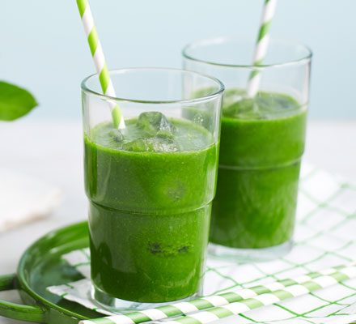

Green Drink

This drink helps with your digestion tract
Drink once a day for 7 days.
Ingredients
2 cups water
2 cups spinach
4 juiced limes
Steps
Add spinach to a blender
Squeeze 4 limes and add water
Blend and enjoy!